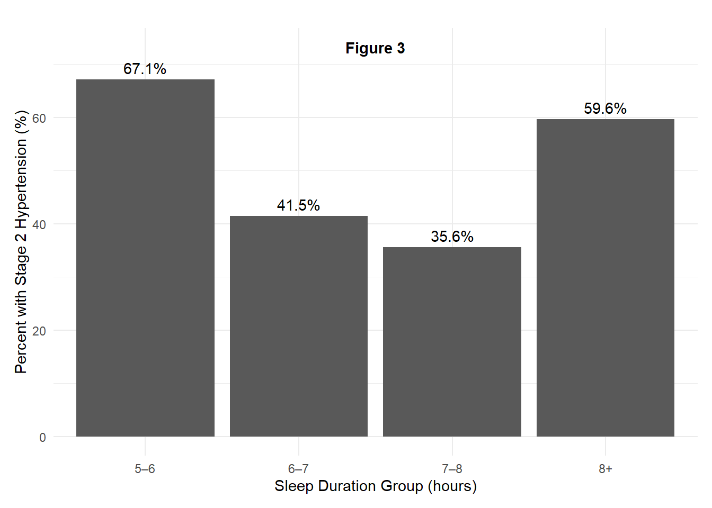

Sleep duration is widely recognized as an important determinant of cardiovascular health, yet the nature of its relationship with blood pressure remains incompletely understood. While insufficient sleep has been consistently linked to elevated cardiovascular risk, emerging evidence suggests that excessive sleep may also be associated with adverse health outcomes. This raises the possibility that the relationship between sleep duration and blood pressure is not strictly linear.
In this paper, we examine the association between self-reported sleep duration and systolic blood pressure using observational health data. We begin by assessing the relationship using a conventional linear specification and simple visualizations. We then extend the analysis to examine blood pressure patterns across discrete sleep-duration groups and clinically relevant hypertension thresholds. Finally, we formally test whether a non-linear (quadratic) model provides a better description of the relationship than a linear specification.
Our results indicate that systolic blood pressure is lowest at moderate sleep durations and higher at both short and long sleep durations, suggesting a non-linear association. These findings highlight the importance of model choice when evaluating health relationships and caution against relying solely on linear interpretations of sleep–health dynamics.
Sleep, Blood Pressure, and Cardiovascular Risk
Sleep behavior has long been studied as a key factor in cardiovascular health. Prior research has documented associations between short sleep duration and elevated blood pressure, increased sympathetic nervous system activity, and higher risk of hypertension. More recent studies, however, suggest that long sleep duration may also be associated with poorer cardiovascular outcomes, including increased blood pressure and mortality risk.
Several mechanisms have been proposed to explain these patterns. Short sleep may increase blood pressure through heightened stress responses, hormonal dysregulation, and impaired metabolic function. Long sleep duration, by contrast, may reflect underlying health conditions, reduced physical activity, or fragmented sleep quality, all of which may contribute to elevated cardiovascular risk.
Despite this growing body of research, many empirical studies continue to rely on linear modeling approaches that may obscure important non-linear patterns. As a result, moderate sleep durations—often considered optimal—may appear only weakly protective when averaged across the full distribution of sleep behavior. This study contributes to the literature by explicitly testing for non-linearity in the sleep–blood pressure relationship using both visual and statistical approaches.
Methods
Data
This study uses the Sleep Health and Lifestyle dataset, which contains 15,000 individual-level observations on sleep behavior and cardiovascular health. Each observation represents one adult respondent. The dataset includes demographic characteristics, sleep duration, sleep quality, physical activity, stress levels, body mass index category, heart rate, daily steps, and blood pressure measurements.
Sleep duration is measured as the average number of hours slept per night. Blood pressure is reported in millimeters of mercury (mmHg) and includes both systolic and diastolic values.
Variables
The primary outcome variable is systolic blood pressure (mmHg). In additional analyses, hypertension prevalence is examined using two clinical definitions:
(1) Standard hypertension (systolic ≥130 mmHg or diastolic ≥80 mmHg), and
(2) Stage 2 hypertension (systolic ≥140 mmHg or diastolic ≥90 mmHg).
The key explanatory variable is sleep duration, measured in hours per night. For descriptive analyses, sleep duration is grouped into four categories: 5–6 hours, 6–7 hours, 7–8 hours, and 8 or more hours.
Analytical Approach
The analysis proceeds in three steps. First, the relationship between sleep duration and systolic blood pressure is examined using a linear regression model and corresponding visualizations to assess the average association between the two variables.
Second, mean systolic blood pressure and hypertension prevalence are compared across discrete sleep duration groups to evaluate whether clinically meaningful differences emerge across sleep categories.
Third, a quadratic regression model is estimated to allow for a non-linear relationship between sleep duration and systolic blood pressure. Model fit is evaluated by comparing the linear and quadratic specifications using an analysis of variance (ANOVA), adjusted R-squared values, and the Akaike Information Criterion (AIC). Predicted systolic blood pressure values and 95% confidence intervals are generated from the quadratic model to visualize the estimated relationship and associated uncertainty.
Software
All analyses were conducted using R, and all figures and results are fully reproducible within the accompanying Quarto document.
Results
Sleep Duration and Systolic Blood Pressure
We begin by examining the association between sleep duration and systolic blood pressure using a linear specification. Figure 1 plots individual systolic blood pressure values against sleep duration, along with a fitted linear regression line.
Figure 1 shows a negative average association between sleep duration and systolic blood pressure, indicating that individuals who report longer sleep durations tend to have lower systolic blood pressure on average. However, the figure also reveals substantial dispersion in blood pressure values across nearly all sleep durations, suggesting that a simple linear relationship may not fully capture the underlying pattern in the data.
Average Blood Pressure Across Sleep Duration Groups
To further explore this relationship, systolic blood pressure was compared across discrete sleep duration categories (5–6 hours, 6–7 hours, 7–8 hours, and 8+ hours). Figure 2 presents the average systolic blood pressure within each sleep group.
Figure 2 indicates that individuals reporting moderate sleep durations—particularly those sleeping 7–8 hours per night—exhibit lower average systolic blood pressure compared to those reporting shorter or longer sleep durations. This pattern suggests that the relationship between sleep duration and blood pressure may be non-linear rather than strictly monotonic.
Hypertension prevalence was next examined across sleep duration groups to assess whether clinically relevant risk patterns emerge. When hypertension was defined using the standard clinical threshold (systolic ≥130 mmHg or diastolic ≥80 mmHg), prevalence appeared uniformly high across all sleep categories, limiting interpretability.
To address this issue, a stricter definition of Stage 2 hypertension (systolic ≥140 mmHg or diastolic ≥90 mmHg) was applied. Figure 3 presents Stage 2 hypertension prevalence by sleep duration group.
Figure 3 demonstrates clearer variation across sleep categories under the stricter clinical definition. Individuals reporting 7–8 hours of sleep exhibit the lowest prevalence of Stage 2 hypertension, while both shorter (5–6 hours) and longer (8+ hours) sleep durations are associated with higher prevalence rates.
fig3_df <- df2 %>%group_by(sleep_group) %>%summarise(stage2_rate =mean(stage2_htn, na.rm =TRUE), .groups ="drop")ggplot(fig3_df, aes(x = sleep_group, y = stage2_rate *100)) +geom_col() +geom_text(aes(label =paste0(round(stage2_rate *100, 1), "%")),vjust =-0.5 ) +annotate("text",x =2.5,y =max(fig3_df$stage2_rate *100) +6,label ="Figure 3",fontface ="bold" ) +labs(x ="Sleep Duration Group (hours)",y ="Percent with Stage 2 Hypertension (%)" ) +coord_cartesian(clip ="off") +theme_minimal() +theme(plot.margin =margin(t =20, r =10, b =10, l =10))

Non-Linear Relationship Between Sleep Duration and Blood Pressure
Given the patterns observed in both average blood pressure levels and hypertension prevalence, a non-linear relationship between sleep duration and systolic blood pressure was formally evaluated. A quadratic regression model was estimated and compared to the linear specification.
Figure 4 presents predicted systolic blood pressure values derived from the quadratic model, along with 95% confidence intervals.
Figure 4 illustrates a U-shaped relationship between sleep duration and systolic blood pressure. Predicted blood pressure is lowest at moderate sleep durations and higher at both short and long sleep durations. The confidence interval reflects uncertainty around the predicted mean systolic blood pressure at each sleep duration, with wider intervals at the extremes indicating greater variability and fewer observations.
Model Confirmation: Linear vs. Quadratic Specification
To formally evaluate whether the non-linear pattern provides a better description of the data than a linear trend, we compared a linear regression model to a quadratic specification. The quadratic model allows systolic blood pressure to vary non-monotonically with sleep duration by including a squared term.
We used an ANOVA model comparison test to assess whether the quadratic term significantly improves fit relative to the linear model. In addition, we compared adjusted R-squared and Akaike Information Criterion (AIC) values across models as complementary measures of model performance. Then include this code chunk immediately after that text (this is the “confirmation testing” chunk):
# Linear and quadratic modelsm_lin <-lm(sys_bp ~`Sleep Duration`, data = df2)m_quad <-lm(sys_bp ~poly(`Sleep Duration`, 2, raw =TRUE), data = df2)# ANOVA test: does quadratic significantly improve fit?anova(m_lin, m_quad)
Analysis of Variance Table
Model 1: sys_bp ~ `Sleep Duration`
Model 2: sys_bp ~ poly(`Sleep Duration`, 2, raw = TRUE)
Res.Df RSS Df Sum of Sq F Pr(>F)
1 14998 808611
2 14997 791186 1 17425 330.29 < 2.2e-16 ***
---
Signif. codes: 0 '***' 0.001 '**' 0.01 '*' 0.05 '.' 0.1 ' ' 1
# Fit comparison metricstibble(model =c("Linear", "Quadratic"),adj_r2 =c(summary(m_lin)$adj.r.squared, summary(m_quad)$adj.r.squared),AIC =c(AIC(m_lin), AIC(m_quad)))
# A tibble: 2 × 3
model adj_r2 AIC
<chr> <dbl> <dbl>
1 Linear 0.0354 102383.
2 Quadratic 0.0561 102058.
The ANOVA comparison indicates that the quadratic specification fits significantly better than the linear model (p < 0.001). Consistent with this result, the quadratic model has a higher adjusted R-squared and a lower AIC, indicating improved explanatory power and overall model fit.
Discussion
This study examined the association between sleep duration and systolic blood pressure using a large observational dataset. While an initial linear specification suggested that longer sleep duration is associated with lower systolic blood pressure on average, subsequent analyses revealed that this relationship is better characterized as non-linear.
Grouped analyses showed that individuals reporting moderate sleep durations, particularly 7–8 hours per night, exhibited lower average systolic blood pressure and lower prevalence of Stage 2 hypertension compared to those reporting shorter or longer sleep durations. These descriptive patterns were further supported by a quadratic regression model, which indicated a U-shaped relationship between sleep duration and systolic blood pressure, with predicted blood pressure lowest at moderate sleep durations and higher at both extremes.
Formal model comparison confirmed that the quadratic specification provides a significantly better fit to the data than a linear model. This finding suggests that relying solely on linear associations may obscure important variation in cardiovascular outcomes across the distribution of sleep duration. The widening confidence intervals at very short and very long sleep durations indicate increased uncertainty in these ranges, likely reflecting fewer observations and greater heterogeneity among individuals with atypical sleep patterns.
Several mechanisms may help explain the observed non-linear association. Short sleep duration has been linked in prior research to heightened sympathetic nervous system activity, elevated stress hormones, and impaired cardiovascular regulation, all of which may contribute to higher blood pressure. Conversely, longer sleep durations may reflect underlying health conditions, reduced physical activity, or other unobserved factors that are also associated with poorer cardiovascular outcomes. However, the present analysis does not allow for direct testing of these mechanisms.
This study has several limitations. First, the data are observational, and the results should be interpreted as associations rather than causal effects. Second, sleep duration is self-reported and may be subject to measurement error. Third, the analysis does not control for potential confounders such as age, medication use, socioeconomic status, or comorbid health conditions, which may influence both sleep behavior and blood pressure. Future research could extend this analysis by incorporating additional covariates or using longitudinal data to better assess temporal relationships.
Discussion
Despite these limitations, the findings contribute to a growing body of evidence suggesting that both insufficient and excessive sleep are associated with adverse cardiovascular outcomes. The results underscore the importance of considering non-linear relationships in public health research and caution against simplistic interpretations of sleep duration as uniformly beneficial or harmful. Moderate sleep durations appear to be associated with the most favorable blood pressure outcomes in this sample, highlighting the potential relevance of balanced sleep habits for cardiovascular health.
References
Cappuccio, F. P., Cooper, D., D’Elia, L., Strazzullo, P., & Miller, M. A. (2011). Sleep duration predicts cardiovascular outcomes: A systematic review and meta-analysis of prospective studies. European Heart Journal, 32(12), 1484–1492. https://doi.org/10.1093/eurheartj/ehr007
Gangwisch, J. E., Heymsfield, S. B., Boden-Albala, B., Buijs, R. M., Kreier, F., Pickering, T. G., Rundle, A. G., Zammit, G. K., & Malaspina, D. (2006). Short sleep duration as a risk factor for hypertension: Analyses of the first National Health and Nutrition Examination Survey. Hypertension, 47(5), 833–839. https://doi.org/10.1161/01.HYP.0000217362.34748.e0
Liu, Y., Wheaton, A. G., Chapman, D. P., Cunningham, T. J., Lu, H., & Croft, J. B. (2013). Prevalence of healthy sleep duration among adults — United States, 2014. Morbidity and Mortality Weekly Report, 65(6), 137–141.
St-Onge, M. P., Grandner, M. A., Brown, D., Conroy, M. B., Jean-Louis, G., Coons, M., & Bhatt, D. L. (2016). Sleep duration and quality: Impact on lifestyle behaviors and cardiometabolic health. Circulation, 134(18), e367–e386. https://doi.org/10.1161/CIR.0000000000000444
ImaginativeCoder. (2023). Sleep health and lifestyle dataset [Data set]. Kaggle. https://www.kaggle.com/datasets/imaginativecoder/sleep-health-data-sampled